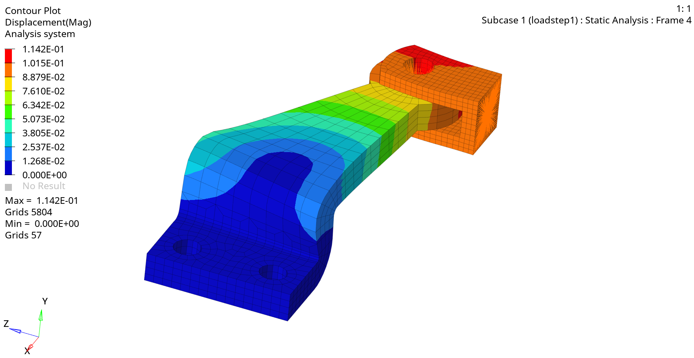
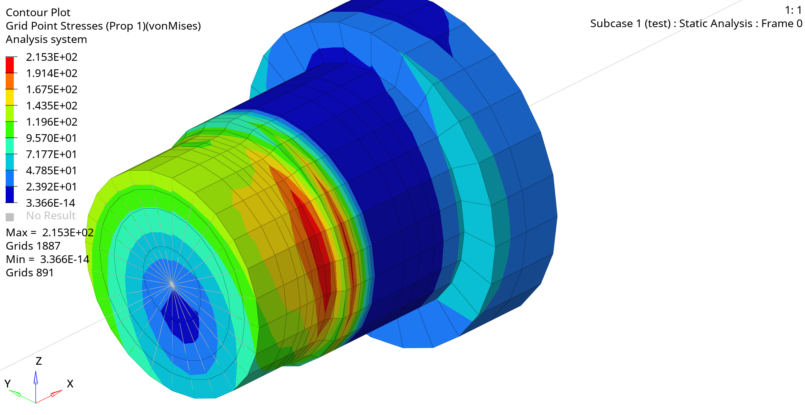
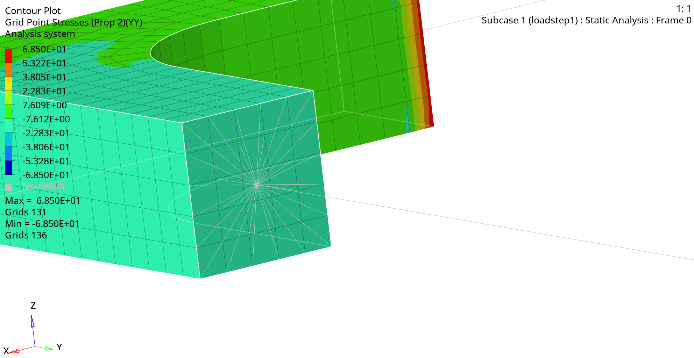
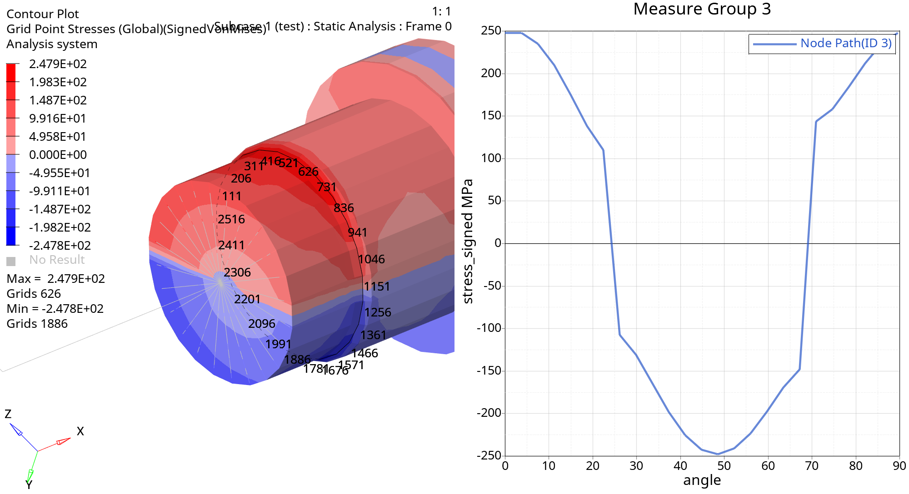
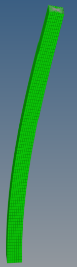
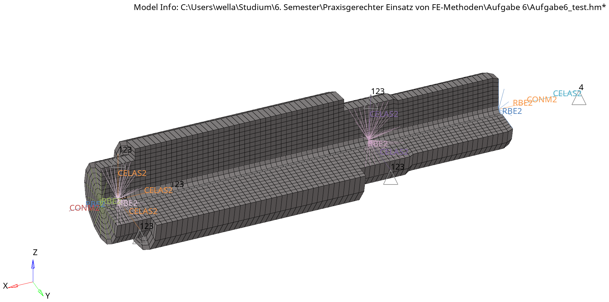

Project · TU Wien finite element coursework
Applied Finite Element Analysis
HyperMesh · OptiStruct · solid/shell/beam models · modal and buckling analysis
I completed two TU Wien finite-element method project sequences focused on practical structural simulation workflows in Altair HyperMesh/HyperView with OptiStruct. The work covered model preparation, discretization choices, load and boundary-condition modelling, solver setup, postprocessing, and comparison against analytical reference solutions.
The first sequence, Finite Elemente in der Anwendung, covered fundamentals through applied examples: hexahedral meshing of a hinge, stress and deformation evaluation around a hole, Bernoulli and Timoshenko beam comparisons, beam-solid transitions with rigid elements, modal analysis, and linear buckling of a thin-walled tube.
The second sequence, Praxisgerechter Einsatz von FE-Methoden, used a more practice-oriented gearbox shaft and bearing setup. I modelled alternative bearing assumptions, evaluated critical stress regions, extracted reaction forces and moments, plotted signed von Mises stress along paths, inspected cylindrical stress tensor components, and ran modal analyses with simplified attached components and stiffness/inertia boundary conditions.





